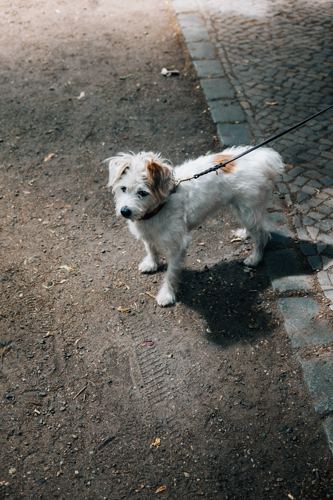

Browse Items
⭐ Featured Items
International Passport
Lost near Admin Office

Golden Retriever
Found near Campus Gate
🚨 Urgent Notices
- Lost Passport – Contact Security Office immediately.
- Found Car Keys near Parking Lot.
🕒 Recent Activity
Sarah reported a Lost Laptop
10 mins ago · Library

John found a Wallet
30 mins ago · Cafeteria